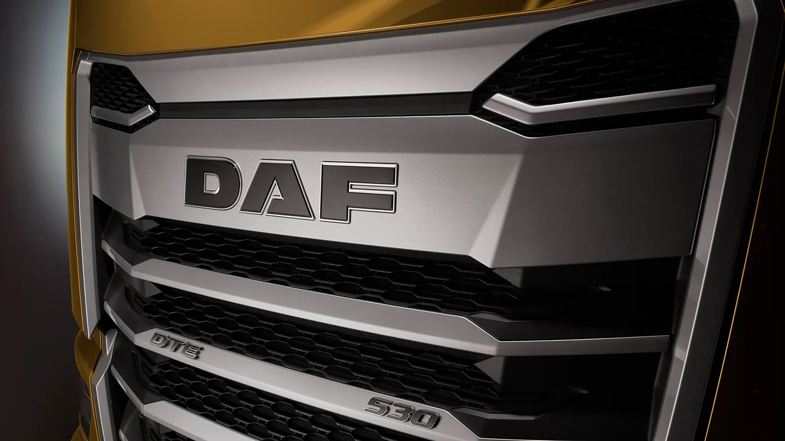

DAF presentó el 14 de septiembre de 2026 su paquete de novedades para IAA Transportation. Incluye un rígido diésel 10x4 para construcción, chasis bajos para transportar automóviles, nuevas configuraciones eléctricas y servicios conectados. El anuncio precede a la apertura de la feria de Hannover, prevista del 15 al 20 de septiembre.
Entre las incorporaciones figuran los XG y XG+ Electric y variantes eléctricas 6x2, 6x4 y 8x4. Para el transporte de autos, la marca describe chasis de 83 centímetros de altura. En posventa, TruckIQ reúne actualizaciones remotas, prediagnóstico y avisos de servicio. También se anuncian mejoras de almacenamiento y descanso en cabina.
Se trata de una presentación europea: el comunicado no confirma comercialización argentina de estas configuraciones. Sus capacidades y condiciones de utilización deben leerse dentro del mercado de origen, sin trasladarlas automáticamente a una operación local.
El trabajo define la configuración
Análisis de Zabala Repuestos. La noticia invita a mirar algo que a veces queda detrás de la potencia: la relación entre el chasis y la tarea. Un transportista no necesita simplemente un camión grande, sino un conjunto que pueda cargar, circular, maniobrar y descargar en sus lugares habituales.
Para describir esa necesidad sirve reconstruir un día completo. ¿Dónde espera la unidad? ¿Cuánto espacio tiene para girar? ¿Qué accesos utiliza con carga? ¿Qué condiciones encuentra al llegar? Ese recorrido ayuda a formular una consulta técnica más precisa que una comparación aislada de motores.
La carrocería debe entrar en la conversación desde el inicio
El proyecto de un vehículo de trabajo involucra al chasis y al equipo que llevará instalado. Conviene que proveedor, carrocero y operador compartan una misma descripción del servicio. Resolver cada parte por separado puede dejar preguntas importantes para cuando el conjunto ya está armado.
Una revisión documental debería permitir identificar la configuración final, los equipos auxiliares y los puntos que requieren atención. También interesa saber qué elementos necesitan desmontarse para una intervención habitual. La facilidad de servicio merece un lugar junto a la capacidad de trabajo.

La comparación eléctrica necesita describir el recorrido
Para evaluar una alternativa eléctrica, una cifra de autonomía no cuenta toda la historia de una jornada. La empresa puede empezar por registrar distancias, detenciones, carga transportada y horarios de regreso. Esa información permite pedir una propuesta ajustada al trabajo que realmente existe.
También conviene separar el escenario habitual del excepcional. Un servicio adicional, una demora o un cambio de destino pueden modificar la planificación. Una propuesta completa debería explicar qué margen conserva la operación y qué respuesta tiene cuando el día no transcurre como estaba previsto.
Los servicios conectados deben llegar al responsable correcto
Una alerta aporta valor cuando alguien puede interpretarla y organizar una respuesta. Antes de sumar una herramienta, la flota necesita definir quién recibe los avisos y cómo los relaciona con sus turnos de taller. La información técnica y la planificación del viaje deben poder encontrarse.
También interesa conservar un registro de las intervenciones. Si cambia el responsable de una unidad, el historial debe seguir disponible. Esto ayuda a distinguir una tarea realizada de una recomendación pendiente y a evitar consultas repetidas por falta de antecedentes.
Qué conviene preguntar desde Argentina
- Qué versión y equipamiento pueden ofrecerse efectivamente en el país.
- Qué documentación corresponde a la combinación de chasis y carrocería.
- Qué cobertura de servicio existe en las zonas donde trabajará.
- Qué componentes requieren herramientas o formación específica.
- Cómo se organiza una respuesta si el camión queda fuera de servicio.
La presentación muestra por qué una novedad industrial puede interesar incluso antes de tener disponibilidad local. Permite conocer hacia dónde se dirige la oferta y mejorar las preguntas que hacemos al comparar vehículos. El criterio final sigue siendo concreto: qué conjunto puede cumplir la tarea y sostenerla durante su vida de trabajo.